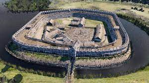
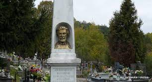
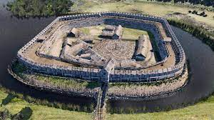
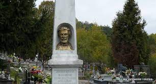

Historia
Nazwa miejscowości pochodzi prawdopodobnie od mongolskiego słowa
bator oznaczającego "bohatera".
Na przełomie VIII i IX wieku w Batorzu, na miejscu dzisiejszego cmentarza,
istniał gród otoczony fosą i drewnianą palisadą.
U jego podnóża skupione były zabudowania zamieszkane przez ludność,
prawdopodobnie Lędzian. Archeolog Zbigniew Wichrowski,
szef Muzeum Regionalnego w Kraśniku, kierujący pracami badawczymi uważa,
że gród w Batorzu był również miejscem związanym z religią Słowian.
Religijne obrzędy koncentrowały się prawdopodobnie wokół
jeziora o obwodzie 30 metrów, zasilanego przez naturalne źródła
bijące spod wzgórza (stąd przypuszczalnie cześć oddawano tam bogom
słowiańskim związanym z żywiołem wody). Podobną funkcję mogły pełnić
grody zlokalizowane w pobliskim Guciowie i Chodliku.
Archeolodzy zlokalizowali w Batorzu także pozostałości
trzech kurhanów z grobami całopalnymi.
W sumie archeolodzy odsłonili w Batorzu 23 obiekty,
choć prace (związane z planowaną rozbudową wyciągu narciarskiego)
objęły tylko fragment dawnego grodziska, ponieważ na dalszej części
jego obszaru usytuowany został cmentarz.
6 września 1863 w okolicach wsi, na Sowiej Górze,
rozegrała się bitwa między oddziałem powstańców styczniowych
dowodzonych przez Marcina Lelewela Borelowskiego
a wojskami rosyjskimi. Na miejscowym cmentarzu zostali pochowani
polegli powstańcy wraz ze swoim dowódcą.
 


